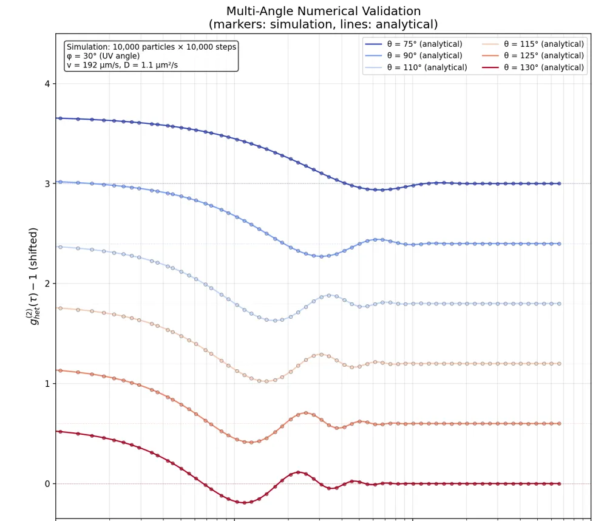

Heterodyne DLS of self-propelled nanoparticles
Numerical reproduction of Christoulaki and Buhler, Phys. Rev. E 111, 015433 (2025). Light-driven nanoparticles are modelled as Brownian particles with a constant drift, and the field correlation function is computed from 10,000 simulated trajectories, then checked against the analytical result at six scattering angles. For this aligned ensemble, homodyne detection loses the propulsion velocity; heterodyne detection recovers it from the oscillations of the correlation function.
Code on GitLab